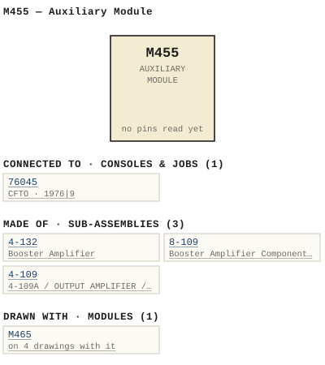

M455 — Auxiliary Module
| Type | module |
| Category | ROUTING |
| Try it | simulator & front panel · download package (zip) |
| Earliest dated evidence | 1974|7 — title-block date |
| Evidence | "DATE DEC 74" in WBS Photos-1-001/455-04-001.jpg |
| Confidence | high |
| All years found | 1974|7, 1979|12 |
| Used in jobs | 76045 (1976|9) |
| Folder | DOCUMENTS/RECENT SCANS/WBSps.ca 20210317 - Small 11X17 drawings |
| Folder | DOCUMENTS/RECENT SCANS/WBSps.ca 20210319 - Redone of what Sampson scanned |
| Folder | Modules/DYNAMICS/M465 |
Connections and circuit (ideal SPICE model)
Inputs, outputs, power and control as its own documents name them (no RTO-144 sheet for it: pin numbers only where the page gives them). Run the generator, turn the gain, watch the VU.
Pictures


M455.connections.svg 1974 - 455-04-001 - AUXILIARY MODULE ASSEMBLY - DRN DM - ISS 3.jpg
1974 - 455-04-001 - AUXILIARY MODULE ASSEMBLY - DRN DM - ISS 3.jpg 1979 - M455 - P002.jpg
1979 - M455 - P002.jpg 1979 - M455 - P1.jpg
1979 - M455 - P1.jpg 1974 - 455-02-001 - AUXILIARY MODULE SCHEMATIC - DRN DM - ISS 6.png
1974 - 455-02-001 - AUXILIARY MODULE SCHEMATIC - DRN DM - ISS 6.png 1974 - M455 - 4-132-06-003 - WAAD-BECK BYBTEMS.jpg
1974 - M455 - 4-132-06-003 - WAAD-BECK BYBTEMS.jpg 1974 - M455 - 455-01-001 - RULU FUNCTIONAL DIAGRAM.jpg
1974 - M455 - 455-01-001 - RULU FUNCTIONAL DIAGRAM.jpg 1974 - M455 - 455-01-001 - RYLU FUNCTIONAL DIAGRAM.jpg
1974 - M455 - 455-01-001 - RYLU FUNCTIONAL DIAGRAM.jpg 1974 - M455 - 455-02-001 - AND ALL CAPACITORS.jpg
1974 - M455 - 455-02-001 - AND ALL CAPACITORS.jpg 1974 - M455 - 455-02-001.jpg
1974 - M455 - 455-02-001.jpg 1974 - M455 - 455-04-002 - REELN CONNECTOR REAR VIEW CALE OLS.jpg
1974 - M455 - 455-04-002 - REELN CONNECTOR REAR VIEW CALE OLS.jpg 1974 - M455 - 455-04-003 - AUX LIARY MASTER LEVEL CONTROL.jpg
1974 - M455 - 455-04-003 - AUX LIARY MASTER LEVEL CONTROL.jpg 1974 - M455 - 455-04-003 - FEEDS OUTPUT SIY SWNACHEEPCETSED CUTPUC.jpg
1974 - M455 - 455-04-003 - FEEDS OUTPUT SIY SWNACHEEPCETSED CUTPUC.jpg 1974 - M455 - 8-109-02-004 - NOMINAL VALUE.jpg
1974 - M455 - 8-109-02-004 - NOMINAL VALUE.jpg 1974 - M455 - 8-109-06-004 - BOOSTER AMPLIFIER.jpg
1974 - M455 - 8-109-06-004 - BOOSTER AMPLIFIER.jpg 1974 - M455 - I dont know.jpg
1974 - M455 - I dont know.jpg 1974 - M455 - P001 - Title Page.jpg
1974 - M455 - P001 - Title Page.jpg 1974 - M455 - P003 - 1-1.jpg
1974 - M455 - P003 - 1-1.jpg 1974 - M455 - P004 - 2-1.jpg
1974 - M455 - P004 - 2-1.jpg 1974 - M455 - P005 - 3-1.jpg
1974 - M455 - P005 - 3-1.jpg 1974 - M455 - P006 - 3-2.jpg
1974 - M455 - P006 - 3-2.jpg 1974 - M455 - P007 - 8-109.jpg
1974 - M455 - P007 - 8-109.jpg 1974 - M455 - P008 - 8-109-1-1.jpg
1974 - M455 - P008 - 8-109-1-1.jpg 1974 - M455 - P009 - 8-109-1-2.jpg
1974 - M455 - P009 - 8-109-1-2.jpg 1974 - M455 - P010 - 8-109-2-1.jpg
1974 - M455 - P010 - 8-109-2-1.jpg 1974 - M455 - P011 - 8-109-2-2.jpg
1974 - M455 - P011 - 8-109-2-2.jpg 1974 - M455 - P012 - 8-109-2-3.jpg
1974 - M455 - P012 - 8-109-2-3.jpg 1974 - M455 - P013 - 8-109-2-4.jpg
1974 - M455 - P013 - 8-109-2-4.jpg 1974 - M455 - P014 - 8-109-2-5.jpg
1974 - M455 - P014 - 8-109-2-5.jpg 1974 - M455 - P10.jpg
1974 - M455 - P10.jpg 1974 - M455 - P11.jpg
1974 - M455 - P11.jpg 1974 - M455 - P12.jpg
1974 - M455 - P12.jpg 1974 - M455 - P13.jpg
1974 - M455 - P13.jpg 1974 - M455 - P14.jpg
1974 - M455 - P14.jpg 1974 - M455 - P15.jpg
1974 - M455 - P15.jpg 1974 - M455 - P2.jpg
1974 - M455 - P2.jpg 1974 - M455 - P3.jpg
1974 - M455 - P3.jpg 1974 - M455 - P4.jpg
1974 - M455 - P4.jpg 1974 - M455 - P5.jpg
1974 - M455 - P5.jpg 1974 - M455 - P6.jpg
1974 - M455 - P6.jpg 1974 - M455 - P7.jpg
1974 - M455 - P7.jpg 1974 - M455 - P8.jpg
1974 - M455 - P8.jpg 1974 - M455 - P9.jpg
1974 - M455 - P9.jpg 1974 - M455 - wbsps - module - m455 aux module_small.jpg
1974 - M455 - wbsps - module - m455 aux module_small.jpg 1978 - 455-01-001 - AUXILIARY MODULE FUNCTIONAL DIAGRAM - DRN P. MAHONEY - ISS 3 (2).jpg
1978 - 455-01-001 - AUXILIARY MODULE FUNCTIONAL DIAGRAM - DRN P. MAHONEY - ISS 3 (2).jpg 1978 - 455-01-001 - AUXILIARY MODULE FUNCTIONAL DIAGRAM - DRN P. MAHONEY - ISS 3.jpg
1978 - 455-01-001 - AUXILIARY MODULE FUNCTIONAL DIAGRAM - DRN P. MAHONEY - ISS 3.jpg 19xx - DOC - 455-02-001 - COM REG.png
19xx - DOC - 455-02-001 - COM REG.png 19xx - DOC - 465-03-002 - UNC NOIE.jpg
19xx - DOC - 465-03-002 - UNC NOIE.jpg 19xx - 455-01-001.jpg
19xx - 455-01-001.jpg 1974 - 465-03-001 - M455 & M465 EXTRUSION - DRN DM - ISS 9.jpg
1974 - 465-03-001 - M455 & M465 EXTRUSION - DRN DM - ISS 9.jpg 1976 - 76045 - 455-04-001 - AUXILIARY MODULE (2).jpg
1976 - 76045 - 455-04-001 - AUXILIARY MODULE (2).jpg 1976 - 76045 - 455-04-001 - AUXILIARY MODULE.jpg
1976 - 76045 - 455-04-001 - AUXILIARY MODULE.jpg 1976 - 76045 - 455-02-001 - REG COM CRA.jpg
1976 - 76045 - 455-02-001 - REG COM CRA.jpgPrice history
| Year | Kind | Price | Listed as | Effective | Source |
|---|---|---|---|---|---|
| 2005|38 | used market value | 10.00 | M455 AUX sends | wbsps - website ARCHIVE/WBSPS 2008/ARCHIVE/old website/PriceGuide.htm | |
| 2006|39 | used market value | 10.00 | M455 AUX sends | wbsps - website ARCHIVE/WBSPS 2008/ARCHIVE/jan 2006 shell/priceguide.htm |
Pinout & connections
Dates found in the documents
| Year | Kind | Text | File |
|---|---|---|---|
| 1974|7 | title-block date | DATE DEC 74 |
1974 - 455-04-001 - AUXILIARY MODULE ASSEMBLY - DRN DM - ISS 3.jpg |
| 1979|12 | month & year | JAN. 19 79 |
1979 - M455 - Auxiliary Module.pdf |
| 1979|12 | manual issue date | MANUAL ISSUE #2 JAN . 1979 |
1979 - M455 - P002.jpg |
| 1979|12 | manual issue date | MANUAL ISSUE #2 Jan 1979 |
1979 - M455 - P1.jpg |
Physical manual inventory
| Item | Location | Status | Scanned |
|---|---|---|---|
| M455 | Recently scanned and stiched by WB | ||
| M455 - Auxiliary Module | PDF - Already scanned |
Documents (2)
| Year | File | |
|---|---|---|
| 1974|7 | 1974 - M455 - Auxiliary Module.pdf | note |
| 1979|12 | 1979 - M455 - Auxiliary Module.pdf | note |
Photos & scans (51)


Sub-assemblies & parts used (3)
| Item | What | Family | Year | How we know |
|---|---|---|---|---|
| 4-132 | Booster Amplifier | Sub-assemblies (n-nnn) | 1977|10 | drawing filed with it |
| 8-109 | Booster Amplifier Component Layout | Sub-assemblies (n-nnn) | 1974|7 | drawing filed with it |
| 4-109 | 4-109A / OUTPUT AMPLIFIER / SCHEMATIC | Sub-assemblies (n-nnn) | 1976|9 | named in its manual |
Parts list — board 8-109 (4 parts)
From 1974 - M455 - P14.jpg, page 1 (scanned); also in timelines/data/bom.csv.
| Ref | Part | Value | Manufacturer | Mfr part no. |
|---|---|---|---|---|
| R3 | Resistor delete | |||
| CR1 | Diode Fairchild | 1N4148 | ||
| R1 | Resistor XW 47K Philips | 5% | ||
| R34 | Resistor GW 59 |
Parts list — board M455 (9 parts)
From 1974 - M455 - P6.jpg, page 1 (scanned); also in timelines/data/bom.csv.
| Ref | Part | Value | Manufacturer | Mfr part no. |
|---|---|---|---|---|
| M455 | AUXILIARY MODULE | |||
| R27 | Resistor #W 300 Philips | 5 % | ||
| R31,32 | delete | |||
| R36 | Trim Pot Piher PT 5K | 10V | ||
| R37 | Resistor AW 150 Philips | 5 % | ||
| R38 | delete | |||
| SW2 | SW1) Switch Schadow WBS | 11-051 | ||
| SW6 | delete | |||
| SW7 | Pendar | SB2310 |
Consoles & jobs it is connected to (1)
Their own drawings name this module.
| Job | Year | Drawing | Page |
|---|---|---|---|
| 76045 | 1976|9 | 1976 - 76045 - 01-001.pdf | 1 |
Named in other drawings & documents (2)
| File | Page |
|---|---|
| 19xx - RTO-144 - Module RTO-144 Jumper calculator.xlsx | 1 |
| 1974 - 465-03-001 - M455 & M465 EXTRUSION - DRN DM - ISS 9.jpg | 1 |
From the manuals
Each manual split into its sections. Text that is the same in many Ward-Beck manuals (warranty, address, standard notes) is kept once on the Boilerplate page and linked.
General description (2)
Description — 258 words · 1974 - M455 - P8.jpg, page 1
8-109 AMPLIFIER SERIES . The 8-109 series 0 f amp]ifiers are utilized as an interna] component within various WBS series 0 f audi 0 conso ]e modules . Each 8-109 amplifier mounts a$ plug-in assembly onto the mo dule motherboard _ 3 The 8-109 amp]i fier provides an actively balanced output :. with +30 dBm capability It is employed as an output or booster amp]ifier with either balanced or an unbalanced input 7.
^ The fo]lowing specifications apply to the 8-109 series 0 f : amp]ifiers _ Unit Input Gain ' . : 8-109 / : 8-1094 8-109B . . 8-109€ ` . 8-1090 8-109E 8-109F 8-1096 Ba Tanced Unbalanced Ba]anced` Ba ]anced . Unbalanced Ba lanced Ba lanced Ba lanced 15 dB 7 18 39 3 29 29 33 dB 23 dB 3 < 4.
| { ' F . Frequency Response: +0 . 2 dB from 20 Hz to 20 kHz ' . ` Noise: ' . Harmonic Distortion: -108 dBm EIn from 20 Hz to 20 kHz. Less than 0 . 1% THD from 20 Hz to 20 kHz at +30 dBm output (typically Tess than 0 . 02% at mid-band) . 600 ohms or less , balanced or unba lanced_ Source Impedance: Input Impedances ModeIs with balanced input: minimum 8-109A: 30k ohms 8-109D: 4700 ohms 5k ohms 7 ^ e .
, ` Input Levels Depending on gain 0 f particular mode1 6. and system operating Tevels (Refer to . 4^ . ^ J{ gain specifications above . ) ' . > ` 8-109-1-1
- source: 1974 - M455 - P8.jpg, p. 1
Description — 36 words · 1974 - M455 - P014 - 8-109-2-5.jpg, page 1
MFG MEG_PART_NUMBER 2222-638-09478 c6 C1l Capacitor 4.3 PF Philips R15 Resistor @W 5% 2k4 WBS recommends the us e of replacement parts made by the specified manufacturers for continued opt mum equipment performance 8 - 109-2-5
- source: 1974 - M455 - P014 - 8-109-2-5.jpg, p. 1
Specifications (2)
Technical Data — 199 words · 1974 - M455 - P3.jpg, page 1
M455 AUXILIARY MODULE Ga in: 33 dB +0 .5 dB _ Frequency Response: Noise: +0.25 dB from 20 Hz to 20 kHz . 85 dB be]ow +8 dBm nomina] output Teve1 (20 Hz to 20 kHz ) Harmonic Distortion: Less than 0 .25% THD from 20 Hz to 20 kHz at +24 dBm output or Tess Less than 0 .
1% at kHz at +24 dbm output Source Impedances : 600 ohm or Tess , ba lanced Input Impedances : Auxiliary Input: Talkback Input: Meter Input: 600 ohm ba lanced 24 000 ohm , ba lanced _ 7,500 ohm , ba lanced . Input Leve]s : Auxiliary Input: Talkback Input: Meter Input: -10 dBm nomina ] +30 dBm maximum. +8 dBm nomina ] +8 dBm for 0 vu reading .
Output Impedances : 600 ohm , balanced _ Load Impedances 600 ohm , ba Ianced _ Output Leve1 Power Requirements : +8 dBm nomina] +24 dBm maximum . +25 volts dc , 20 mA nomina] , 75 ma maximum. Ambient Temperature: Dimensions : 0 to 60 degrees Celsius _ 1.6" wide X 7" high X 6 . 5" deep .
(41 mm X 178 mm X 165 mm) 1-1
- source: 1974 - M455 - P3.jpg, p. 1
Technical Data — 175 words · 1974 - M455 - P003 - 1-1.jpg, page 1
M455_AUXILIARY_MODULE Ga in: 33 dB +0.5 dB _ +0.25 dB from 20 Hz to 20 kHz _ Frequency Response: Noise: 85 dB be ow +8 dBm nomina] output Ieve1 (20 Hz to 20 kHz) Harmonic Distortion: Less than 0.258 THD from 20 Hz to 20 kHz +24 dBm output or less . Less than 0 .1% at 1 kHz at +24 dbm output Source Impedances 600 ohm or less , balanced_ Input Impedances Auxi Kback Inputz Input Ta ] Meter Input 600 ohm, ba Tanced 24,000 ohm, balanced 7,500 ohm, ba anced Input LeveIs: Ayxikback Input: Ta Input Meter Input: Output Impedances: Load Impedances : 10 dBm nominal , +30 dBm maximum.
+8 dBm nomina +8 dBm for vu reading . 600 ohm, ba lanced _ 600 ohm, balanced _ +8 dBm nominal , +24 dBm maximum +25_ volts dc, 20 MA nomina] 75 mA maximum Output LeveI Power Requirements Ambient Temperature Dimens ons to 60 degrees Celsius _ 6 " wide 7" high 165 6m5" deep . {45 MM X 178 mm X 1
- source: 1974 - M455 - P003 - 1-1.jpg, p. 1
Parts list (text) (4)
Parts List — 1477 words · 1979 - M455 - Auxiliary Module.pdf, page 5
""55 AUXI LIARY MODULE
PART DESCRI PTI ON MFG PART NUMBER
ci '" ca CJ C4
CR I OiOd ~ Motorola CR2 CR3 CR4 OS! li gh t Bu l b . 2B Y 387 Mete r , YU Bach - Si llps on " QI Trans istor National 15 4211-2 1(132- 6
PNJ569 Q2 PI0 6 4 5 Q' Te ~as Tl P298 Q' TlP JOB QG National PNJ569
Q' PN3645
:H Pote ntiometer A/ 8 WBS 10 -0 12
RJ to RB Res istor ,",W 51 delete
:~ ~ " RID Rl l, 12 dele te Ph! 11 p s
Rl3 1<2 RI. delet e RIG 22 0 a
'16 220 .c
Rl7 12K ps
Rl8 12K BS
RI9 to W
R26 delet e :// tp ht
'-I
WA~ O -B ECK S YSTEM S LT O
14455 AUX I LIARY MODULE
PART DESCR IPTION 0" HFG PART NUMBER
:~~ Resi ~t or lrll 5S JOO JOO
'" RJO R31,3Z JOO 300 delete RJ3 'J< ." R35 '" 910
'" R37 Trf . Pot Resistor lrW 51 150 Pi her Phil1ps PT lOY 5K
RJ8 delete RJ' 4701' "0 "1 15K 15K 5.' '" "3 5.' 5.' '" "5 5.' Sill) S1l2) Swit ch Sch adow IlBS 11-05 1
SIl3 to SO, delete S.7 Pendar SB23 10 a
WBS r e c ommen ds th e use of reph celne nt part s ma de by t he .c
s pecf ffe d manufact urers fo r c ont in ued op t fmum e quipme nt ps
per forma nce . BS W :// tp ht
3-'
W AR C - B E CK SYS T EMS LTC ,
8- 109 AMPLI FI ER SERIES
a .c ps BS W :// tp ht
8 - 109
W A Fl O - B E CI< S VSTEMS LTD .
8- 10 9 AMPL IFI ER SERI ES
The 8-109 ser ies o f amQllfie..... are utili zed as an inte"" a l componen t w l l h in var iou s was ser ie s of aud io console modules . Each 8-109 amplifier moun l s as a plug _ in assembly onto the modu le molhe~rd.
The 8-109 ampl ifier prov ides an actively balanced ou tp UI with a .JO d Bm cap ability. I I i s emp loyed as an outpu l Or e b oo s le r amplifier w 'th ei lher a balanced o r an unbalanced i npu t.
The follow in g s peci f iclH io ns a pp ly to I h e 8-1 09 se r ies of a mp li f ie rs .
8 - 109 Ba lanced 15 ea 8 _I09A Unbalanced r ee 8_I09B Balanced 18 dB 8_ 109C Balanced 39 dB 8_1090 Unba la tlced 29 dB e-rose Balanced 2 9 dB 8- I09F Balanced 33 d B 8 - 10% Balanced 23 dB F req ue n c y Re s p on s e : . ;- 0 . 2 d B from 20 Hz to 20 kH z.
- 108 d Bm E I N from 20 Hz 10 20 k Hz .
Hal'mOnk Oi st or l ion: Le s s than 0 .1 1 THO from 20 Hz to 20 k Hz a l .JO dBm outpUI
- source: 1979 - M455 - Auxiliary Module.pdf, p. 5
Parts List — 99 words · 1974 - M455 - P6.jpg, page 1
M455 AUXILIARY MODULE PART DESCRIPTIOn MFG MFG PART NUMBER R27 Resistor #W 5 % 300 R28 300 R29 300 R30 300 R31,32 delete Philips R33 R34 R35 R36 R37 910 8K2 910 Trim Pot Resistor AW 5 % 150 Piher Philips PT 10V 5K R38 R39 R40 R4 1 R42 delete 470k 15K 15k 5 , 6 R43 R44 R45 5 5 _ 6 5 6 SW1) SW2 Switch Schadow WBS 11-051 SW3 to SW6 delete SW7 Pendar SB2310 WBS recommends the use of replacement parts ma de by the specified manufacturers for continued optimum equipment performance _ 3-2
- source: 1974 - M455 - P6.jpg, p. 1
Parts List — 15 words · 1974 - M455 - P15.jpg, page 1
8-109 AMPLIFIER SERIES 8-109F A11 parts as per 8-109 except as noted be low PART
- source: 1974 - M455 - P15.jpg, p. 1
- also in: 1974 - M455 - P14.jpg, p. 1
Drawings (25)
Each scan with its trace laid over it: the slider runs from the scan to the vector drawing. Click one to see it large and save it as SVG, DXF, KiCad, PDF or PowerPoint.
Rulu Functional Diagramviewer
Ohm Ext Aux Auxviewer
M455 / AUXILIARY MODULE / FUNCTIONAL DIAGRAMviewer
M455 / AUXILIARY MODULE / FUNCTIONAL DIAGRAMviewer
19xx - 455-01-001viewer
Fimish Auxiliary Module Schematicviewer
1974 - M455 - 455-02-001viewer
Booster Amplifier Schematicviewer
M455 / AUXILIARY MODULE / SCHEMATICviewer
Reg Com Craviewer
Com Regviewer
Mounted Over Pin Pad For Wirineviewer
Booster Amplifier Component Layoutviewer
Auxiliary Module Assemblxviewer
Auxiliary Moduleviewer
Reeln Connector Rear View Cale Olsviewer
When Depressed Feeds Outputviewer
Feeds Output Siy Swnacheepcetsed Cutpucviewer
M455 / AUXILIARY MODULE / ASSEMBLYviewer
Unc Noieviewer
Read from the drawing title blocks.
| Drawing | Title | Date | Drawn by | Checked by | Iss. | Source |
|---|---|---|---|---|---|---|
| 455-04-001 | Auxiliary Module | 1974|7 | DM | RRJ | file | |
| 455-04-001 | Auxiliary Module | 1974|7 | DM | RR | file | |
| B 455-02-001 | M455 / AUXILIARY MODULE / SCHEMATIC | 1974|7 | DM | 6 | file | |
| B 455-04-001 | M455 / AUXILIARY MODULE / ASSEMBLY | 1974|7 | DM | RNJ | 3 | file |
| B 455-01-001 | M455 / AUXILIARY MODULE / FUNCTIONAL DIAGRAM | 1978|11 | P MAHONEY | R KELLE | 3 | file |
| B 455-01-001 | M455 / AUXILIARY MODULE / FUNCTIONAL DIAGRAM | 1978|11 | P MAHONEY | 3 | file | |
| — | HTI | file p.17 | ||||
| 32-06-003 | Ale Component Layout | file p.18 | ||||
| 4-132-06-003 | Waad-Beck Bybtems | DN | 5 | file | ||
| 4-132-06-003 | Mounted Over Pin Pad For Wiring Oss Mod | RAX | file p.18 | |||
| 455-01-001 | Rylu Functional Diagram | 3 | file | |||
| 455-01-001 | Rulu Functional Diagram | 3 | file | |||
| 455-01-001 | Ohm Ext Aux Auxiliary Input | file p.16 | ||||
| 455-02-001 | And All Capacitors | file | ||||
| 455-02-001 | file | |||||
| 455-02-001 | Reg Com Cra | file | ||||
| 455-02-001 | Com Reg | file | ||||
| 455-04-002 | Reeln Connector Rear View Cale Ols | 2 | file | |||
| 455-04-003 | Aux Liary Master Level Control | file | ||||
| 455-04-003 | Feeds Output Siy Swnacheepcetsed Cutpuc | RUZ | file | |||
| 465-03-002 | Unc Noie | DO | file | |||
| 8-109-02-004 | Nominal Value | GEB (Gerry E. Bell) | RAL | 8 | file | |
| 8-109-06-004 | Booster Amplifier | GEB (Gerry E. Bell) | RSH | 3 | file | |
| 8-109-06-004 | Booster Amplifier Component Layout | GEB (Gerry E. Bell) | RUH | 8 | file p.21 | |
| B 455-01-001 | file |